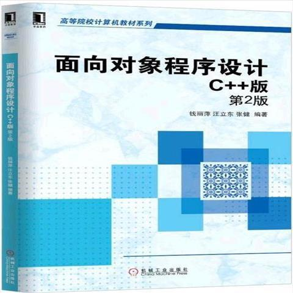
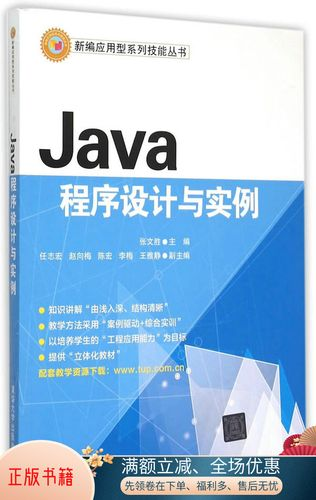

|  |  | ||
《离散数学》是研究离散量的结构及其相互关系的数学学科，是现代数学的一个重要分支。离散的含义是指不同的连接在一起的元素，主要是研究基于离散量的结构和相互间的关系，其对象一般是有限个或可数个元素。离散数学在各学科领域，特别在计算机科学与技术领域有着广泛的应用，是必不可少的先行课程。 |
《数据结构与算法分析C++描述》（第3版）是数据结构和算法分析的经典教材，书中使用主流的程序设计语言C++作为具体的实现语言。书的内容包括表、栈、队列、树、散列表、优先队列、排序、不相交集算法、图论算法、算法分析、算法设计、摊还分析、查找树算法、k-d树和配对堆等。 |
面向对象程序设计（Object Oriented Programming，OOP）是一种计算机编程架构。OOP的一条基本原则是计算机程序由单个能够起到子程序作用的单元或对象组合而成。OOP达到了软件工程的三个主要目标：重用性、灵活性和扩展性。OOP=对象+类+继承+多态+消息，其中核心概念是类和对象。 |
《Java程序设计》通过对Java编程语言的全面介绍，引导读者快速地掌握Java编程语言的核心内容并学会灵活运用所学的语言知识及面向对象的编程思想。《Java程序设计》共分9章，内容包括Java语言概述、面向对象编程初步、Java的基本语法、类库与数组、面向对象编程深入、Applet程序、图形用户界面编程、异常处理和输入输出，以及多线程编程。 |
课
程
资
源